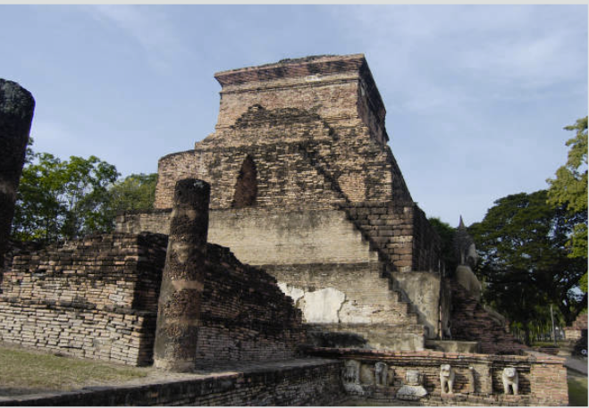

B

B - Bihar is the birthplace of Buddhism. The state has many important Buddhist sites, including Bodh Gaya, where the Buddha is said to have attained enlightenment.
I

I - Bihar was home to many ancient universities, including Nalanda and Vikramshila, which were among the world's first universities.
H

H - Bihar has many important Hindu and Jain sites as well, including the Mahabodhi Temple complex in Bodh Gaya, which is a UNESCO World Heritage Site.
A

A - The Bihar State Museum in Patna is home to many important historical artifacts, including sculptures from the Mauryan and Gupta empires.
R

R - Bihar was once part of the powerful Pala Empire, which ruled much of eastern India and Bengal in the 8th to 12th centuries CE.

Bodh Gaya
Bodh Gaya is a religious site and place of pilgrimage associated with the Mahabodhi Temple Complex in Gaya district in the Indian state of Bihar. It is famous as it is the place where Gautama Buddha is said to have obtained Enlightenment (Pali: bodhi) under what became known as the Bodhi Tree.

Nalanda
Nalanda is a ruined city in the northeastern Indian state of Bihar.
It is located about 95 kilometres southeast of Patna and was a centre
of learning from the fifth century CE to c. 1200 CE. Nalanda
was established as a Buddhist monastery in the 3rd century BCE
and was an important center of Buddhist learning, attracting scholars
from all over India and beyond.

Mahavir Mandir
Mahavir Mandir is one of the holiest Hindu temples dedicated to Lord Hanuman, located in Patna, Bihar. It is one of the most visited temples in North India and attracts millions of devotees every year. The temple is known for fulfilling the wishes of its devotees and is considered to be a very powerful and auspicious place.

Takht Sri Patna Sahib
Takht Sri Patna Sahib is one of the five Takhts of Sikhism and is located in the city of Patna, Bihar. It is the birthplace of the tenth Sikh Guru, Guru Gobind Singh Ji, and is considered to be one of the holiest places in Sikhism. The gurdwara is visited by thousands of devotees every day.

Vikramshila
Vikramshila was one of the two most important centers of Buddhist learning in India during the Pala Empire, along with Nalanda. It was established by King Dharmapala in the late 8th century and flourished for several centuries. The ruins of Vikramshila are located in Bhagalpur district of Bihar and are a popular tourist destination.

Patna Museum
Patna Museum is a museum located in the city of Patna, Bihar. It was established in 1917 and has a rich collection of artifacts, including sculptures, coins, paintings, and textiles. The museum is known for its collection of artifacts related to the Maurya and Gupta empires, as well as its collection of Buddhist and Jain sculptures.
Vikramshila
Vikramshila was one of the two most important centers of Buddhist learning in India during the Pala Empire, along with Nalanda. It was established by King Dharmapala in the late 8th century and flourished for several centuries. The ruins of Vikramshila are located in Bhagalpur district of Bihar and are a popular tourist destination.
Vikramshila
Vikramshila was one of the two most important centers of Buddhist learning in India during the Pala Empire, along with Nalanda. It was established by King Dharmapala in the late 8th century and flourished for several centuries. The ruins of Vikramshila are located in Bhagalpur district of Bihar and are a popular tourist destination.
Vikramshila
Vikramshila was one of the two most important centers of Buddhist learning in India during the Pala Empire, along with Nalanda. It was established by King Dharmapala in the late 8th century and flourished for several centuries. The ruins of Vikramshila are located in Bhagalpur district of Bihar and are a popular tourist destination.
Vikramshila
Vikramshila was one of the two most important centers of Buddhist learning in India during the Pala Empire, along with Nalanda. It was established by King Dharmapala in the late 8th century and flourished for several centuries. The ruins of Vikramshila are located in Bhagalpur district of Bihar and are a popular tourist destination.
Vikramshila
Vikramshila was one of the two most important centers of Buddhist learning in India during the Pala Empire, along with Nalanda. It was established by King Dharmapala in the late 8th century and flourished for several centuries. The ruins of Vikramshila are located in Bhagalpur district of Bihar and are a popular tourist destination.